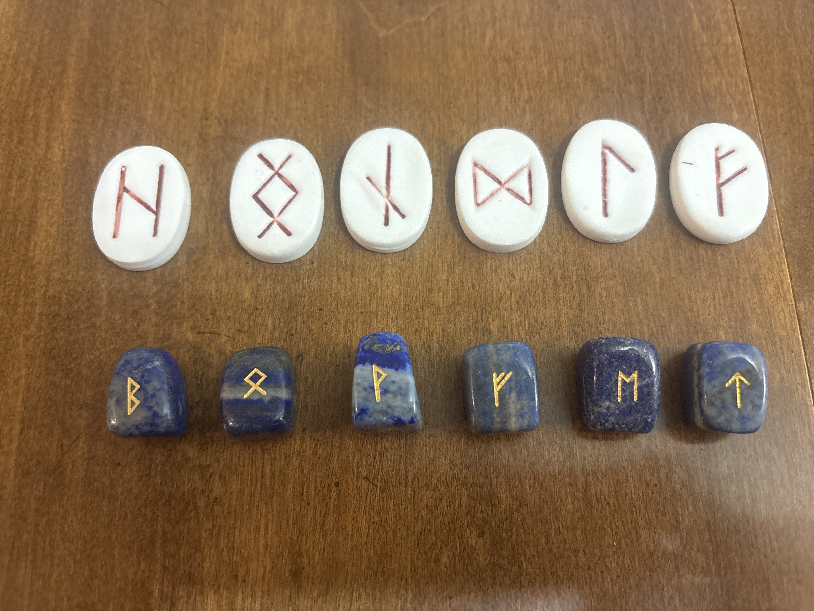
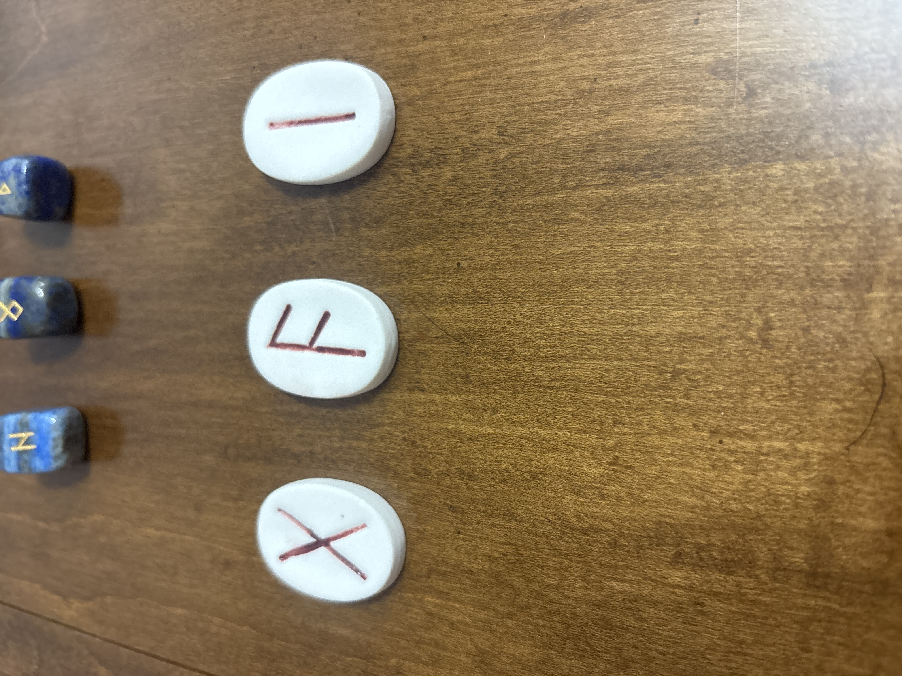
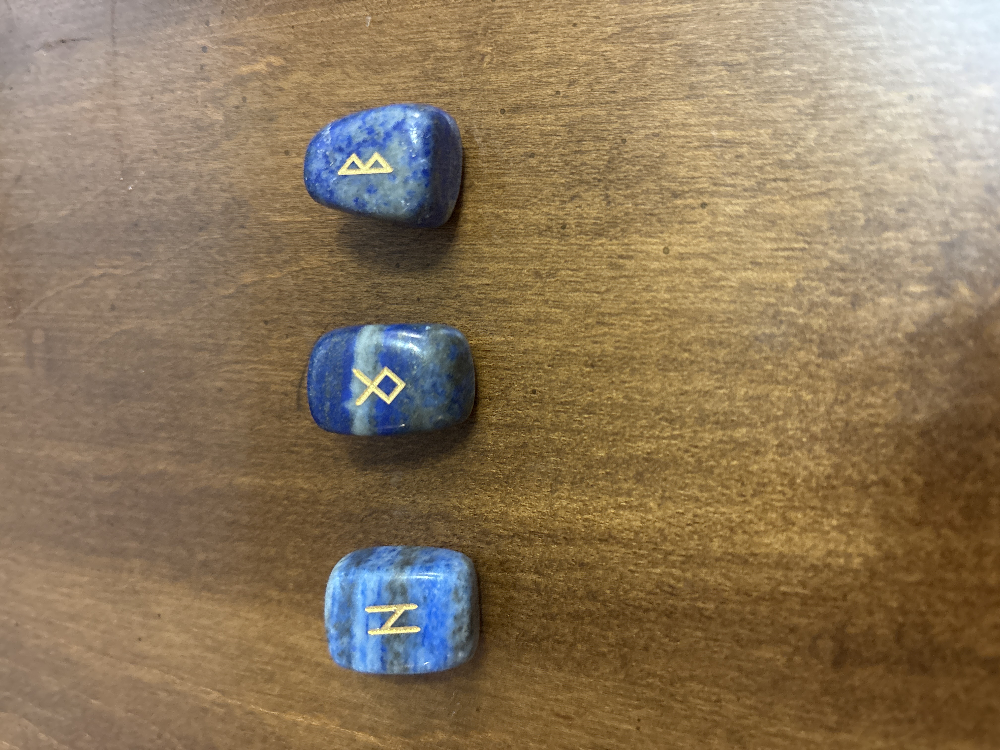
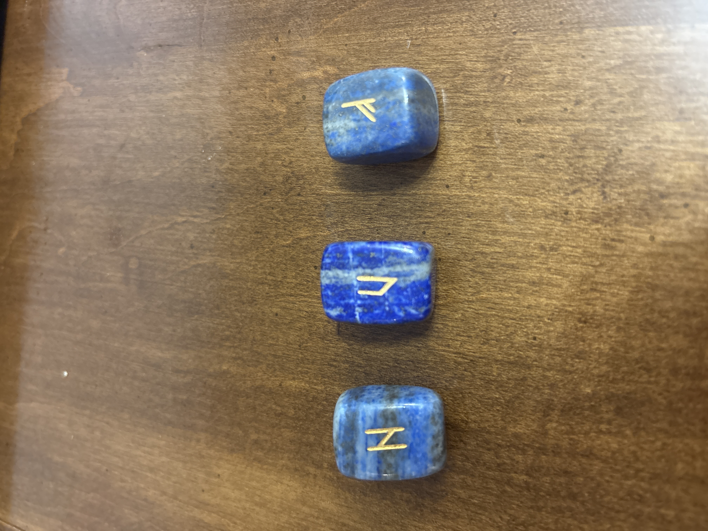

Elder Futhark
Elder Futhark is the earliest commonly classified runic alphabet. Its name comes from its first six characters, and its twenty-four runes were used across parts of the Germanic world during the early centuries of the Common Era.
Ancient language, symbolic reflection
Runes began as letters, but they’ve endured as symbols capable of carrying language, memory, mythology, and meaning across centuries.
More Than Fortune Telling
Rune casting uses a limited symbolic vocabulary to examine movement, conflict, timing, inheritance, exchange, disruption, and consequence. The value isn’t in pretending a stone has removed uncertainty. It’s in letting the cast reveal a pattern that may be difficult to recognize through ordinary thought.
Within Synchronic Self Theory, runes function as reflective tools. The cast becomes a meeting point between the question, the symbols drawn, the reader’s interpretation, and the patterns already active in the questioner’s life.
That interpretation isn’t meant to replace evidence, personal responsibility, or independent judgment. It’s meant to create perspective. Humanity has already produced plenty of systems that promise certainty while quietly selling confusion.
A Brief History of Runes
The historical runic alphabets developed among Germanic-speaking peoples. They were used for names, memorials, ownership, communication, ritual language, and inscriptions carved into materials that could survive the hands using them.
Elder Futhark is the earliest commonly classified runic alphabet. Its name comes from its first six characters, and its twenty-four runes were used across parts of the Germanic world during the early centuries of the Common Era.
Runes represented sounds and formed written language. Their names also carried concepts, allowing a character to function as both a letter and a symbolic idea. That dual role helped later divinatory traditions grow around them.
Runic inscriptions appear on stone, metal, wood, bone, weapons, jewelry, and personal objects. Some are monumental. Others are surprisingly ordinary, because ancient people also had errands, property, jokes, and practical lives.
Odin and the Cost of Knowledge
Odin’s missing eye represents one of the best-known sacrifices in Norse mythology. He gives an eye for a drink from Mímir’s well, exchanging ordinary sight for deeper wisdom.
His acquisition of the runes is told through a separate ordeal. In Hávamál, Odin hangs wounded on the world tree for nine nights, offering himself to himself until he perceives and takes up the runes.
The two stories share a central principle: knowledge transforms the knower because something must be surrendered to receive it. The eye represents how we see. The hanging represents the collapse of the identity that believed it already understood.
Odin’s eye and Odin’s discovery of the runes belong to related themes, but they aren’t the same mythological event.
Freyja and Magical Knowledge
Freyja is associated with seiðr, a form of Norse magical practice connected with altered perception, fate, desire, influence, and hidden knowledge. Tradition credits her with teaching this art to the Æsir.
Modern rune practice often places Freyja beside the runes because she represents intuition, magic, sovereignty, and receptive knowledge. Historically, though, the surviving sources don’t describe a separate set of “Freyja’s runes” in the same direct way that Odin is tied to winning the runes.
Symbolically, Odin and Freyja offer complementary models. Odin seeks knowledge through ordeal, sacrifice, language, and conscious pursuit. Freyja represents knowledge reached through intuition, embodiment, relationship, desire, and the willingness to enter uncertain states.
Rune casting can hold both. It requires the discipline to understand the symbols and the intuition to recognize how those symbols speak to the question being asked.
The Sets I Work With
Both of my rune sets use the same symbolic language, but they don’t create the same visual or tactile experience. Clients may choose between the white ceramic set and the blue lapis lazuli set for an online casting.
The difference isn’t that one set is more powerful. It’s that materials influence tone, attention, and the kind of symbolic atmosphere surrounding the reading.


The white ceramic runes are visually direct. Their pale surface and hand-painted red marks create strong contrast, making the symbols feel exposed, immediate, and difficult to soften through ornament.
Ceramic begins as earth shaped by hand and transformed through fire. That gives the set a useful symbolic tension: something grounded becomes permanent only after passing through heat.
I associate the ceramic set with clarity, embodiment, direct questions, practical circumstances, and truths that need to be brought out of abstraction. Its irregularity also matters. These aren’t identical manufactured tokens. The visible human touch makes each rune feel individual.
This set may suit questions involving daily life, decisions, work, boundaries, relationships, or situations where the central issue needs to be named plainly.


The lapis set has a heavier, cooler presence. The blue stone varies from soft clouded bands to deep saturated color, while the gold symbols stand sharply against the surface.
Lapis lazuli has a long cultural history as a valued ornamental stone associated with status, art, sacred objects, and the night sky. In this set, its visual depth naturally complements questions involving intuition, communication, hidden motives, spiritual development, and long-range patterns.
I associate the lapis set with depth, pattern recognition, internal conflict, symbolic questions, and situations that can’t be understood through surface information alone.
It may suit questions involving identity, creativity, purpose, recurring emotional patterns, synchronicity, or the relationship between what someone consciously wants and what they may be projecting beneath that desire.
Choosing a Set
Clients may select a set when requesting a casting, or leave the choice to me based on the question.
Ceramic
The ceramic set emphasizes tangible circumstances, practical choices, visible tensions, boundaries, and what needs to be expressed clearly.
Lapis Lazuli
The lapis set emphasizes intuition, internal patterns, communication, symbolic depth, hidden influence, and questions that unfold across more than one layer.
Online Rune Casting
Online rune castings allow you to submit a question, choose a rune set, and receive an interpretation based on the symbols drawn and their relationship to one another.
The focus remains on reflection, not fixed prediction. I’ll explain the runes, the structure of the cast, the tensions between them, and the perspectives they introduce.
You remain responsible for deciding what fits, what challenges you, and what you choose to do with the reading.
Explain what you’d like the casting to examine. Open questions generally provide more useful room for interpretation than simple yes-or-no questions.
Select the white ceramic set, the lapis lazuli set, or allow me to choose based on the nature of your question.
I’ll interpret the selected runes as a connected pattern and explain both their individual meanings and the story created by their placement together.
Request a Casting
Online rune casting services are available through Synchronic Self Theory. Use the contact page to ask about formats, scheduling, pricing, or which rune set may best suit your question.